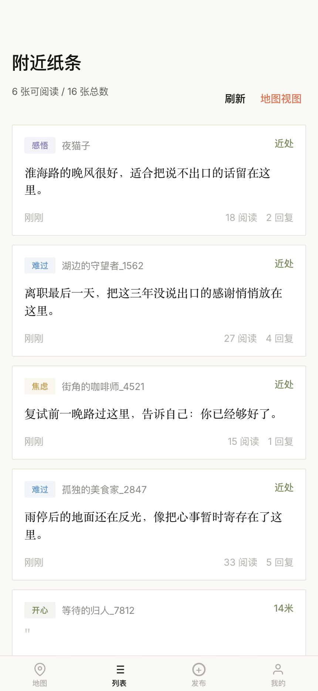
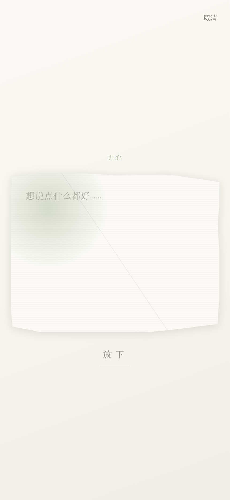

Hackathon Pitch
01 / 10
Dead
Drop
Drop
把纸条
留在地点里
走到一个地方，才能看到别人在这里留下了什么。你也可以写一张，留给下一个来的人。
走到一个地方，才能看到别人在这里留下了什么。你也可以写一张，留给下一个来的人。
匿名注册 → 地图探索 → 看附近纸条 → 选情绪 → 感受身体 → 写下放出去。
整个流程四步：匿名进入 → 打开地图 → 看看这里有什么 → 写一张自己的。不超过两分钟，
但感受完全不同于刷社交媒体。


这六个页面不是堆功能，它们走的是一个心理过程，从“我不敢说”到“我说出来了，而且好像有人懂”。
不是每种孤独都需要聊天对象。有时候你只需要知道：有人也在这里待过，也是这种感觉。
情绪和创伤是有现场的。
大众点评问的是“这地方好不好吃”，小红书问的是“这地方好不好拍”。我们问的是此时此地此情此景，有没有人有过类似的感受？
我们列过 18 个功能模块，包括好友系统、私聊、成就勋章、品牌合作。后来一个一个砍，砍到只剩下“在一个地方放下纸条、捡起纸条”。
做黑客松很容易往上堆功能。但我们发现，加一个错的东西，整个产品的感觉就变了。
不是没想过做更多，而是每加一样东西我们都会问：这会不会让人开始“社交”而不是“表达”？
先把核心体验做到位，在最容易产生共鸣的地方验证。不急着做大，先做深。